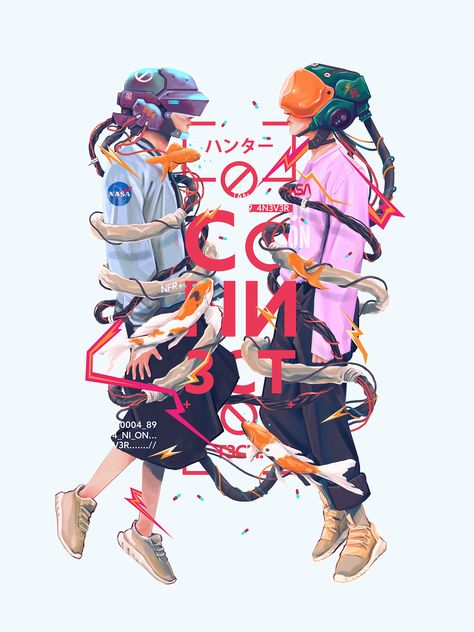
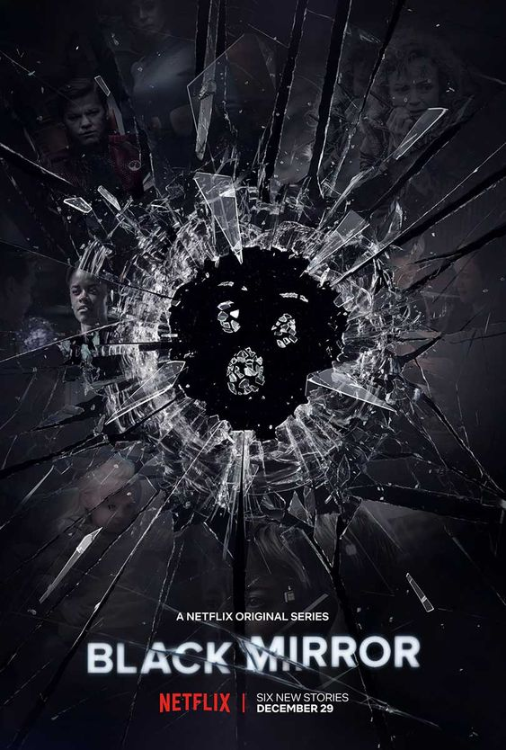
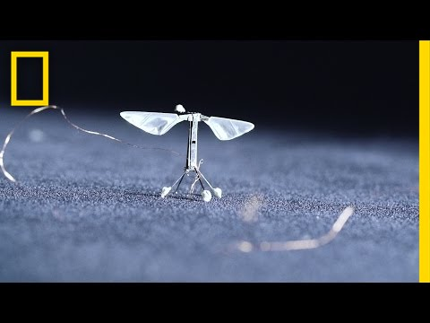
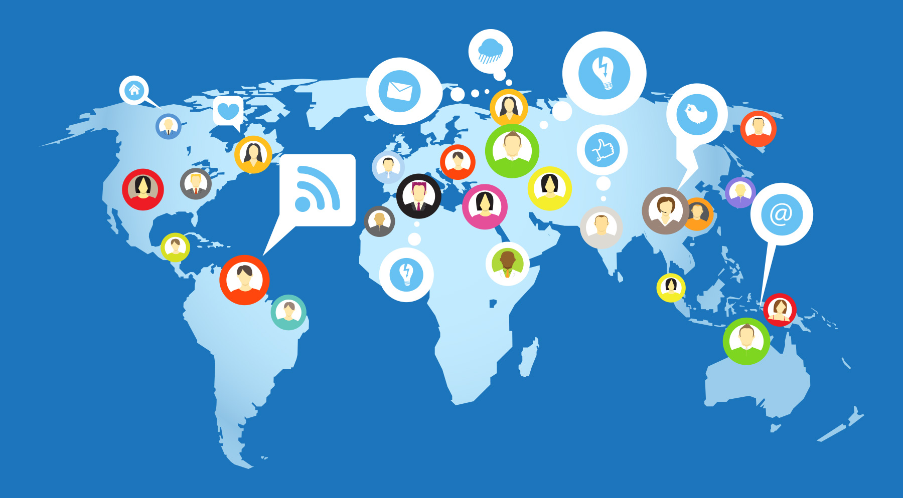

The past few decades has been great for the world of technolgy in the human history. From creating an app which connected millions of people to creating virtual asstiatnace to getting the first evidence of the most powerful substance in existence. The human kind has been using and developing advanced technologies since one can remember. It has become a part of our life. Especially the younger generation whether it is looking into the phone as soon as you wake up or booking the tickets for the next show. These technology is created with the sole purpose of benefiting mankind and the world. With every innovation of technology created or is being created as we speak and every moment passing , we are taking one step forward(or getting deeper into the modern world we've created) to the world of technology.
~ Prakriti Maharjan

via behance.net
What if we could could capture the images through our eyes, what if we could erase the entire memory of a person. These
whatifs lead to a show on netflix called " Black Mirror ". The show is basically based on a distopian future where people
living in that period uses various kind of gadget such as a memory-erasing headband, robotic-dogs, robotic bees, AI that
simulates dead people etc. Though the sow is quiet abstract, what makes it so unsettling
is that its episodes takes place in worlds that could easily pass for our own.
When NASA first announced about the robotic bees or drone bees I couldn't help but think about the robotic-bees from
the show.The purpose of these robotic bees was to pollinate plants incase of insect apocalyspe. In the show, the robotic bees were programmed in such a way that they could use 3D-printing to create hives
and replicate themselves. They were also equiped with facial recognition capabilties and tiny spy cameras that
helps the government check up against potential crimes. Unfortunately, these are hacked and is used to carryout
crimes. NASA invented these with the same purpose as the show and I couldnl't imagine further.
~ Prakriti Maharjan

via Netflix

via NATGEO
Social media is the technolgy that has connected millions of people around the world. It is the great space to express one's views, explore about the current topics and learn new things. It can be used in business purposes to promote business or oneself. People use it as source of entertainment, news or a medium to connect to the outer world. Social media is definitly that source and privilege that we can use to effectively share our views, learn new things and educate who are lagging behind on views regardless any culture or religion. Either one can take social media as a place to do so or simply make a place for society's insatiable thirst of distraction. There are lots of not-so positive aspects of it but for now, it is inclined more towards the positive. side.
~ Prakriti Maharjan
